Die Friedensnobelpreisträger:innen
Frieden
1901
Henry Dunant (1828-1910) Schweiz
Schweiz

Frédéric Passy (1822-1912)
Frankreich

1902
Élie Ducommun (1833–1906)
Schweiz

Albert Gobat (1843-1906)
Schweiz

Élie Ducommun (1833–1906)
Schweiz
Albert Gobat (1843-1906)
Schweiz
1903
William Randal Cremer (1828-1908)
Vereinigtes Königreich

William Randal Cremer (1828-1908)
Vereinigtes Königreich
1905
Bertha von Suttner (1843–1914)
Österreich-Ungarn

Bertha von Suttner (1843–1914)
Österreich-Ungarn
1906
Theodore Roosevelt (1858–1919)
Vereinigte Staaten

Theodore Roosevelt (1858–1919)
Vereinigte Staaten
1907
Ernesto Teodoro Moneta(1833–1918)
Königreich Italien
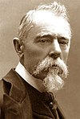
Louis Renault (1843–1918)
Frankreich
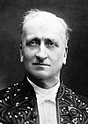
Ernesto Teodoro Moneta(1833–1918)
Königreich Italien
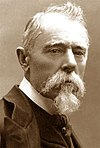
Louis Renault (1843–1918)
Frankreich
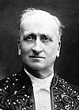
1908
Klas Pontus Arnoldson (1844–1916)
Schweden
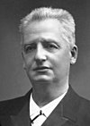
Frederik Bajer (1837–1922)
Dänemark
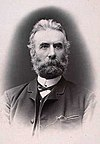
Klas Pontus Arnoldson (1844–1916)
Schweden
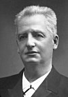
Frederik Bajer (1837–1922)
Dänemark
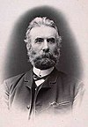
1909
Auguste Beernaert (1829–1912)
Belgien
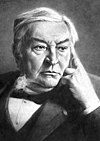
Paul Henri d'Estornelles de Constant (1852–1924)
Frankreich
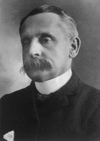
Auguste Beernaert (1829–1912)
Belgien
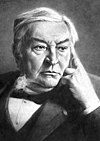
Paul Henri d'Estornelles de Constant (1852–1924)
Frankreich
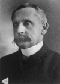